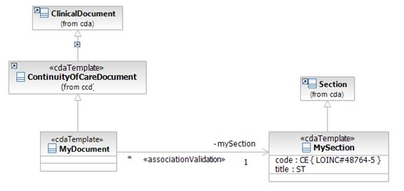
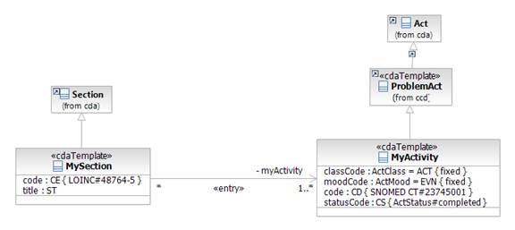
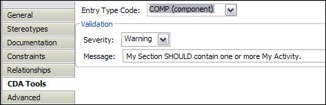
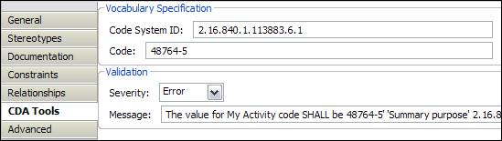
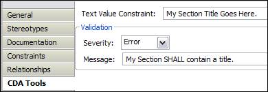

John T.E. Timm, IBM Research
David A. Carlson, Veterans Health Administration
The purpose of this section is to describe the example project. The example project that is available for download from the MDHT software repository at:
cda/examples/org.openhealthtools.mdht.uml.cda.example
The example project contains a simple template model that further constrains the CCD (Continuity of Care Document) model. The model contains three templates: MyDocument, MySection, and MyActivity. The following class diagram captures the relationships between the MyDocument and MySection classes and classes in CCD and the base CDA model. Additionally, it displays the relationship between MyDocument and MySection. The MyDocument and MySection templates both contain the <<cdaTemplate>> stereotype. This indicates, in the diagram, that they further constraint the ClinicalDocument and Section classes, respectively, from CDA. The <<cdaTemplate>> stereotype also holds the value of the template identifier in standard HL7 OID format.

The diagram below captures the relationships between MySection and MyActivity.

These diagrams should give you a feel for the various classes, properties, and relationships in a CDA template model. You will notice that the attributes defined in MyDocument, MySection, and MyActivity mirror those defined in their parent classes from CCD and CDA. These attributes are used to further constrain the attribute definitions from the parent. For example, if a code is optional in the parent, defining an attribute with the same name and type as the parent but specifying a minimum cardinality of 1 makes the attribute required. This type of property redefinition is used during the model-to-model transformation step to generate OCL constraints that are attached to the template model classes.
Relationships between classes that specialize cda::ClinicalDocument and classes that specialize cda::Section, use directed associations to indicate a relationships between two templates in an implementation guide. This type of relationship models conformance rules such as:
MyDocument SHALL contain exactly one MySection
and
MySection SHOULD contain one or more MyActivity
Additional information about the conformance rule can be specified in property values for the <<associationValidation>>, <<entry>>, and <<entryRelationship>> stereotypes. The CDA Tools property tab is a convenient mechanism for entering such data:

The tab is context-sensitive and will only display the data fields available for the element selected in the model diagram or tree view.
Validation severity (a property of the <<associationValidation>> stereotype) is used to differentiate whether the relationship is strictly required for an instance to be considered valid. Validation severity may take on one of three possible values ERROR (strictly required, SHALL), WARNING (recommended/best practice, SHOULD), and INFO (optional, MAY).
UML properties defined in the template model are used to place further constraints on those defined in the parent template model and base CDA model. For example, MySection.code defines a fixed value for the section code using stereotype values from the <<vocabSpecification>> stereotype. The CDA Tools property tab for MySection.code is shown below. This tab can be used to specify the Code, Code System, Code System Version, etc. for a particular coded attribute.

In addition to constraints on coded attributes, structural attributes such as classCode, typeCode, and moodCode can be defined with a fixed or default value in the template model. MyActivity.classCode and MyActivity.moodCode are used to illustrate this type of constraint. Fixed or default value constraints can also be applied to attributes that use text-based datatypes such as ED or ST as illustrated by the MySection.title attribute.
